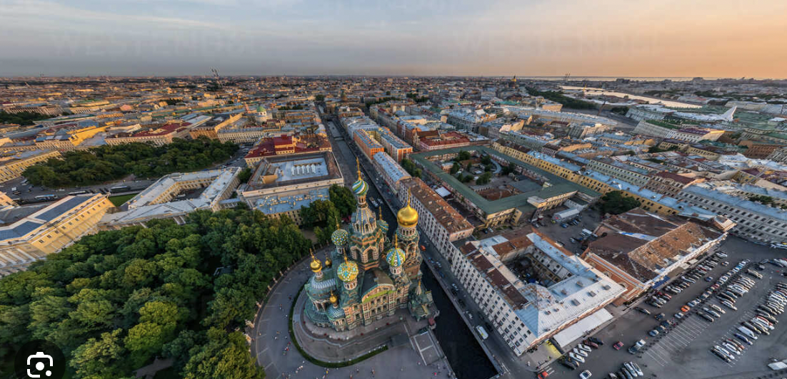
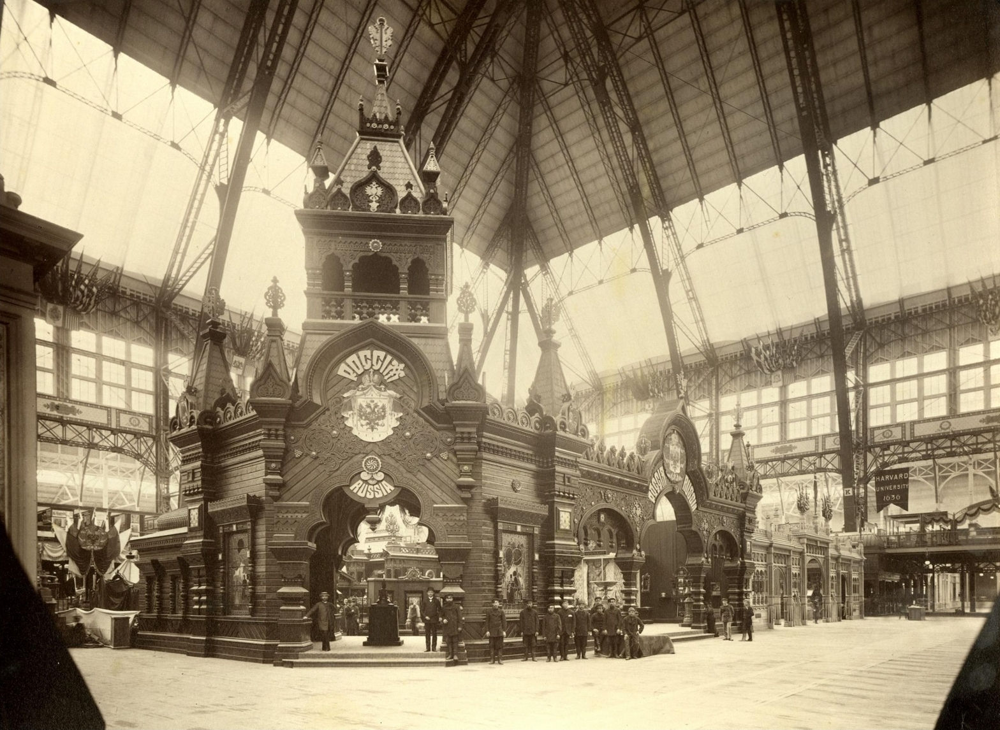
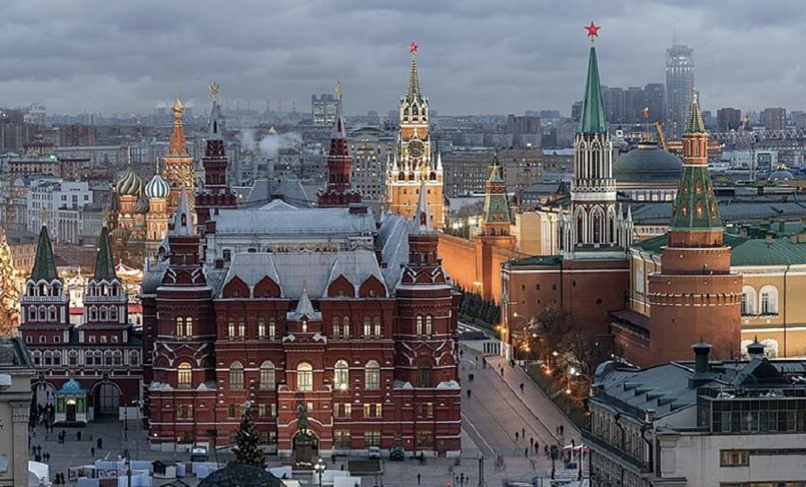

Revivalism in Russian architecture
This style in architecture is sometimes called neo-Russian or pseudo-Russian style

Fig. 1. Savior on Spilled Blood Church (1883-1907) is an example of neo-Russian style. It is located in the middle of western architecture-style St. Petersburg.
Here are some characteristic elements of the Neo-Russian style.
- Arches
- Pot-bellied columns
-
Low arched ceilings: A characteristic element of Russian Revival architecture.
- Narrow window-loop holes
-
Tented roofs
-
Floral frescoes: A characteristic element of Russian Revival architecture.
-
Multicolored tiles: A characteristic element of Russian Revival architecture.
-
Massive forging: A characteristic element of Russian Revival architecture.

Fig. 2. Russian pavillion in neo-Russian style at the World Fair in Chicago (1893)

Fig. 3. State Historical Museum (1883) is an example of neo-Russian style. It is located at the Red Square near the Moscow Kremlin .